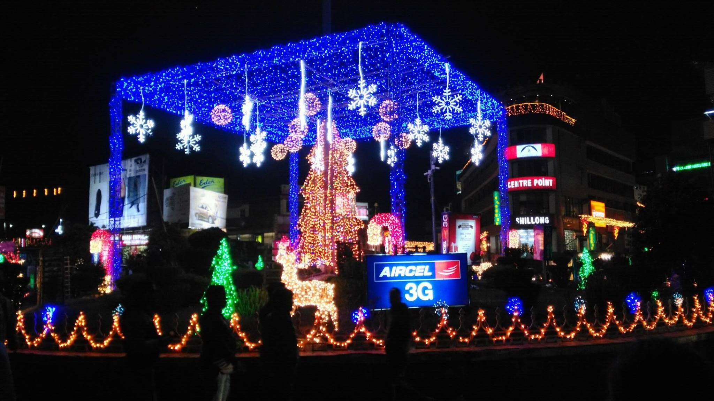
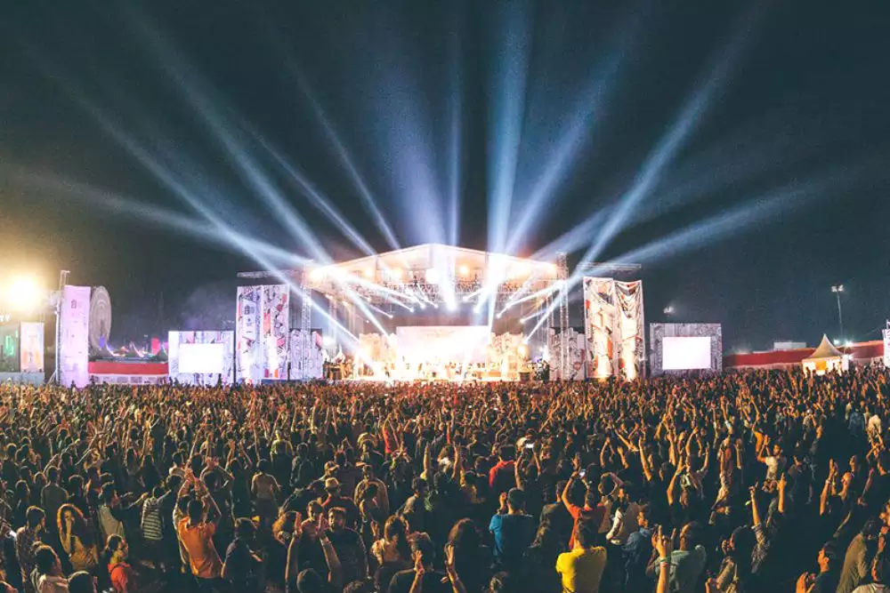

Tourist places
Top 10 places to visit in shillong,Meghalaya
These are some of the most popular tourist places in shillong,Meghalaya
Market
shopping related
Police Bazar
Police Bazar, is a well-known market situated in the heart of Shillong.
Top 10 Hotels in shillong
Best Hotels in shillong,you must stay
Hotels
These are some good Hotels for staying in shillong.
Shillong plans
Shillong tour plans
plans
Plans related to staying in shillong.
Events
Shillong, the beautiful capital of Meghalaya has long been considered the Scotland of the East for its marvellous views, waterfalls, lakes and several other gorgeous natural wonders. However, you’ll be surprised at how much enthusiasm goes into Shillong festivals if you happen to visit during any such event.
Celebrated Events

Cherry Blossom Festivel
Christmas
NH7 Weekender
For more vidoes related to places visit: